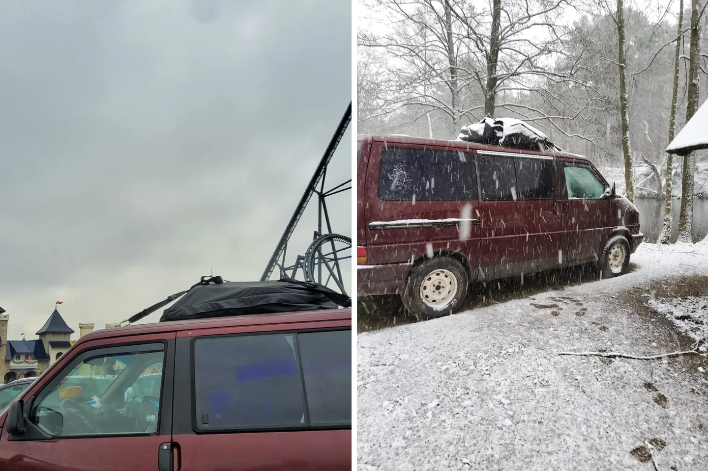

Winter im Energylandia in Polen — wenig Schlaf, sehr viel Spaß

Ein Freizeitpark im Winter klingt entweder völlig verrückt oder nach einer richtig guten Idee. Für mich war es beides. Mit dem Roten ging es zum Energylandia in Polen — Achterbahnen vor der Windschutzscheibe, Schnee am Camper und an Schlaf kaum zu denken.
Schon die Ankunft fühlte sich besonders an
Auf dem ersten Foto steht der Rote direkt vor der riesigen Achterbahnkulisse. Dieses Bild trifft die Stimmung perfekt: Mein kleines Zuhause auf Rädern vor diesen gewaltigen Schienen. Ich war sofort aufgeregt und wollte am liebsten alles gleichzeitig sehen.
Im Winter bekommt so ein Besuch eine ganz eigene Atmosphäre. Kalte Luft, frühe Dunkelheit und Lichter machen den Park anders als an einem heißen Sommertag. Das Energylandia nennt sein saisonales Winterangebot „Winter Kingdom“. Welche Attraktionen und Termine aktuell angeboten werden, ändert sich; deshalb gehört vor der Anfahrt immer ein Blick auf die offizielle Website dazu.
Kein Schlaf, aber jede Menge Erinnerungen
Ich könnte jetzt behaupten, ich hätte im Camper tief und entspannt geschlafen. Die Wahrheit: besonders viel Schlaf war nicht drin. Winter im Van ist intensiver. Nasse Sachen, kalte Luft und ein Tag voller Eindrücke machen aus einer Nacht keine Wellnesspause. Trotzdem würde ich die Erfahrung nicht eintauschen.
Das zweite Foto zeigt den Roten im Schneefall. Genau so sieht die andere Seite eines Winterausflugs aus: schön, aber anspruchsvoll. Man freut sich über die weiße Landschaft und denkt gleichzeitig an Wärme, trockene Kleidung, Batterie und die nächste sichere Strecke.
Warum es trotzdem so viel Spaß gemacht hat
Vanlife muss nicht immer nur einsamer See und Sonnenuntergang sein. Manchmal steht der Bus auf einem Parkplatz vor einem Freizeitpark, man ist völlig übermüdet und grinst trotzdem den ganzen Tag. Energylandia war genau so ein Abenteuer: laut, kalt, aufregend und ganz sicher nicht langweilig.
Wenig Schlaf, sehr viel Spaß — mehr muss man über diesen Ausflug eigentlich nicht sagen. Nur eines noch: Der Rote sah unter den Achterbahnen ziemlich klein aus. Für mich war er an diesem Tag trotzdem der wichtigste Platz im ganzen Park.
Bis bald und immer gute Fahrt,
eure Tussy 💛